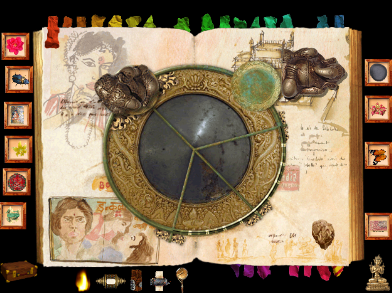
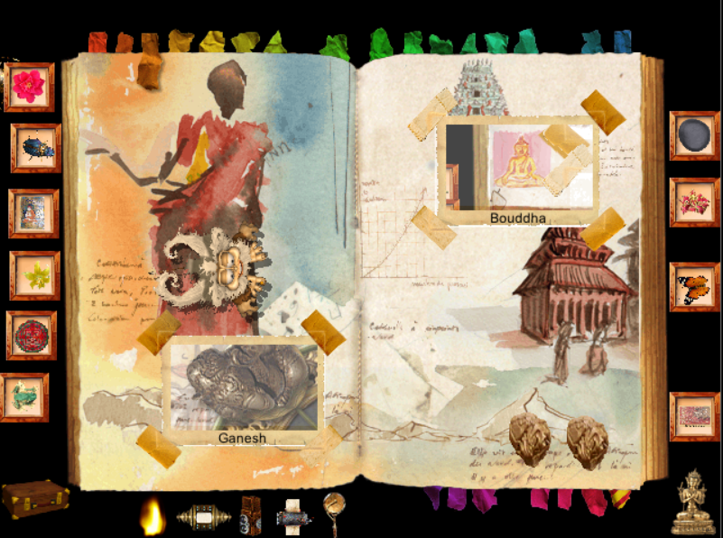
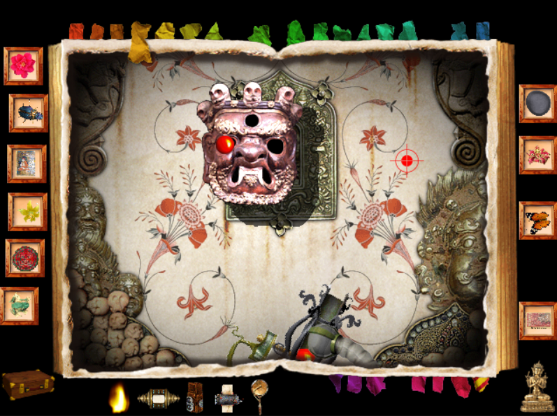
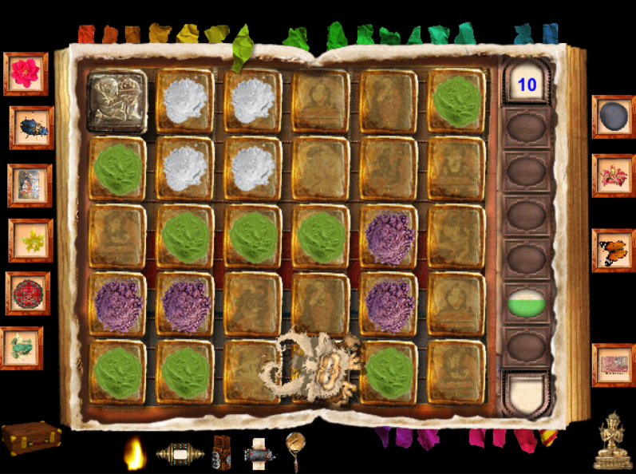
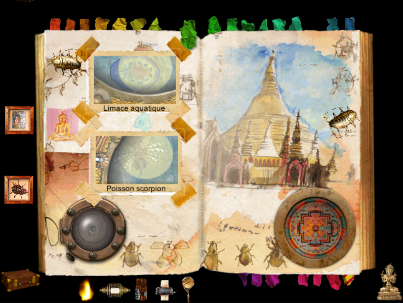
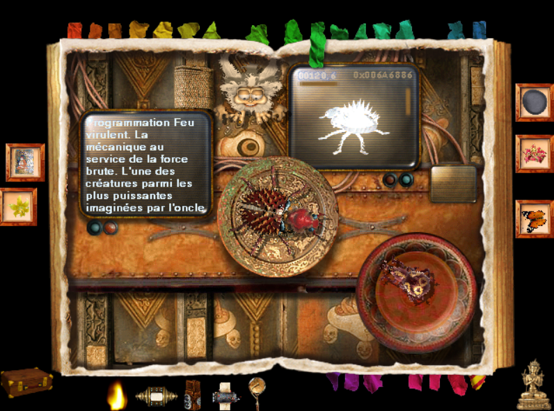
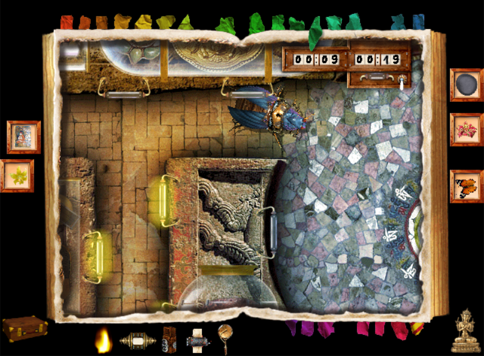
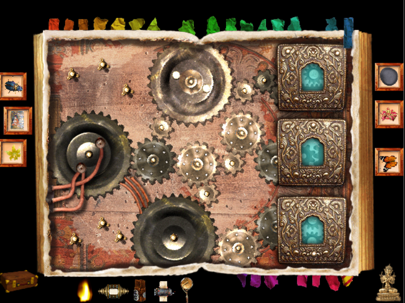
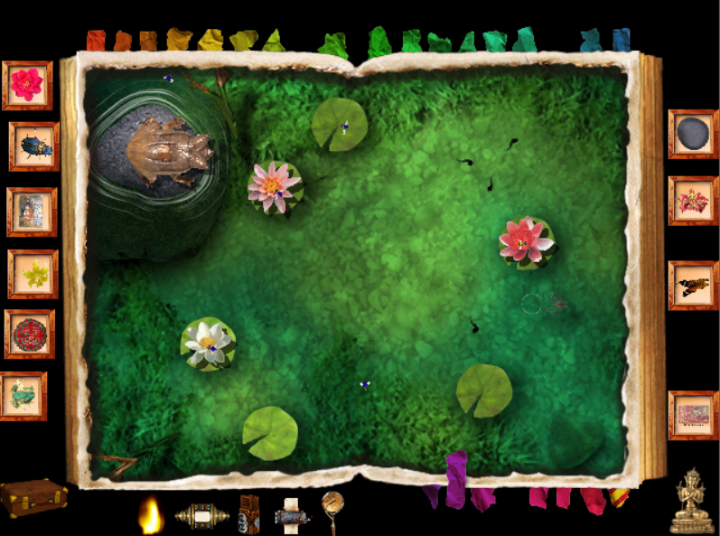

LA STATUETTE MAUDITE - SOLUTION DETAILLEE
Bombay
Il faut équilibrer la balance en empilant plusieurs objets sur le plateau, afin que celui-ci soit diamétralement opposé à la statuette de Ganesh. Par exemple, placez sur le plateau la pierre gris clair et le timbre situés sur cette page, ainsi que la pierre gris foncé située sur la page Manille. Vous aurez alors accès à Bollywood.

Bollywood
Allez chercher les deux bobines manquantes dans les pages Commandes et Everest afin de pouvoir reconstituer le film de l'oncle Ernest. Vous trouverez ainsi le joyau bleu.
Katmandou
Il vous faut prendre deux photos, une de Ganesh et une du Bouddha. Vous pourrez trouver Ganesh dans la page Autel en haut à gauche et le Bouddha dans la page Rangoon à gauche. L'appareil photo se trouve sur la page Jakarta. Vous aurez alors accès au Temple.

Temple
Il faut placer les boules rouges dans les yeux des masques. Attention, envoyer une boule dans une bouche provoque un malus : le viseur se met à trembler davantage.

Everest
Le réglage de l'image s'effectue à l'aide des trois boutons.
Il vous faudra trouver 5 jetons afin d'entendre toute l'histoire. Ceux-ci se trouvent sur les pages suivantes : Everest, Katmandou, Calcutta, Autel et Jakarta.
Calcutta
Ouvrez les portes 1 à 5 pour accéder au Marché aux épices. Une fois les cinq épreuves accomplies, vous aurez accès au Temple hindou par la porte en bas à gauche.
Marché aux épices
Il faut déplacer Chipikan sur les épices dont la couleur correspond à celle des jauges à droite. Si d'autres épices sont ramassées, le niveau des jauges baissera.

Temple hindou
Il faut d'abord retrouver l'image de gauche qui correspond à celui qui s'affiche à droite. Ensuite, il suffit de cliquer rapidement plusieurs fois sur les parties de l'image de droite qui ne correspondent pas à celle de gauche. Il y a 7 différences pour chacune des trois images.
- 1ère image : le disque jaune sur la tête du personnage, le bracelet, la feuille de lotus en bas à droite, les yeux du personnage, le cercle blanc manquant en haut à gauche, le cercle rouge en haut à droite, la bande rouge sur l'épaule droite du personnage.
- 2è image : les deux bijoux violets sur la tête du personnage, l'objet dans sa main gauche, le bracelet manquant à son bras droit, le carré rose en bas à gauche, le trait noir manquant à gauche de la tête du personnage, le « S » gris à droite de sa tête, le bijou violet sur son avant-bras gauche.
- 3è image : le disque rose en bas à droite, le bracelet au bras droit du personnage, le doigt manquant à la main gauche, le bout de tapis en bas à gauche, la déchirure manquante sur la manche gauche du personnage, sa barbe, la tâche noire manquante à droite de sa tête.
Vous découvrirez alors le joyau vert.
Rangoon
Il vous faut aller dans le Bathyscaphe par la trappe en bas à gauche, muni de votre appareil photo trouvé à Jakarta. Après avoir pris les deux photos demandées, placez-les sur la page pour accéder au Laboratoire.

Bathyscaphe
C'est ici que vous devrez prendre les deux photos à placer sur la page Rangoon : un cliché du poisson scorpion et un autre de la limace aquatique. Vous devez les débusquer en déplaçant le bathyscaphe et en vous aidant des projecteurs pour y voir plus clair.
Laboratoire
C'est ici que vous trouverez l'insecto-robot. Cliquez dessus pour faire apparaître sa télécommande. Ensuite, il ne vous restera qu'à partir à la chasse aux insectes pour lui permettre d'apprendre de nouveau pouvoirs en les plongeant dans la cuve.
Bangkok
Vous pouvez accéder directement au Museum par le trou en bas à gauche. La boîte d'allumettes vous permet d'obtenir du feu.
Museum
Pour gagner cette course d'insectes, faites confiance à votre insecto-robot en forme terre 1. Vous obtiendrez un des rouages manquants de la salle des Commandes.

Phnom Penh
Pour reconstituer le puzzle, il faut augmenter ou diminuer la taille des pièces en les trempant dans les vases à gauche. Le vase du haut les fait grandir, celui d'en bas les fait rapetisser. Vous aurez alors accès à l'Autel.
Autel
Pour faire chanter les bols, placez votre curseur sur la surface grise autour des bols désignés par les fourmis, puis faites le tourner lentement sans dépasser de la partie grise. Après cette épreuve, vous pourrez accéder à Angkor.
Angkor
Allez chercher du feu à Bangkok afin d'illuminer les têtes des trois statues. Vous devrez en effet y déposer les trois joyaux qui sont éparpillés à travers le carnet, afin de récupérer le parchemin magique. Attention, si vous éclairez le scorpion, les joyaux tomberont et retournerons sur les bords du carnet.
Salle des cartes
Après avoir rétablit le mécanisme de la page Commandes, il vous faudra apporter ici le parchemin magique trouvé dans Angkor.
Commandes
Il manque trois rouages pour activer le mécanisme. Vous les trouverez dans les pages Bali, Museum et Everest.

Île de légende
Placez votre insecto-robot dans cette pièce. Vous devrez d'abord y passer quatre épreuves correspondant aux quartes éléments, en affrontant le terrible Robosector.
Épreuve de la Terre : il s'agit d'une course de vitesse, le vainqueur est donc le premier à franchir la ligne d'arrivée. Attention aux chutes de pierres qui peuvent vous ralentir (cliquez rapidement sur l'insecto-robot pour le remettre sur ses pattes si cela vous arrive) et aux précipices.
Épreuve du feu : il faut récupérer les 5 joyaux rouges qui apparaissent au fur et à mesure avant que le Robosector ne prenne les 5 joyaux jaunes. Cliquez sur les dalles pour vous déplacer, mais prenez garde : certaines dalles vous transportent ailleurs, d'autres déclenchent des explosions, tandis que d'autres encore vous permettent de vous déplacer deux fois au lieu d'une. Si vous vous trouvez à proximité du Robosector, vous pouvez cliquer sur la case où il se trouve pour l'attaquer et lui faire perdre ainsi son tour.
Épreuve de l'air : il s'agit de se poser sur les 5 socles avant le Robosector. Chaque fois que vous vous posez sur un socle, celui-ci devient bleu, tandis que les socles pris par le Robosector deviennent jaunes. Il faut donc que tous les socles soient de couleur bleue.
Épreuve de l'eau : une autre course de vitesse, mais sous l'eau cette fois. Les sphères bleues et vertes vous font accélérer un peu, tandis que les mines vous ralentissent.
Après avoir passé ces quaters épreuves, il vous restera à passer l'épreuve de l'esprit. Tout d'abord, il faudra mettre votre insecto-robot en mode esprit 2 afin qu'il ne se fasse pas détecter par les rayons. Ensuite, il faudra réunir sur cette page trois éléments : la fleur Phalaenopsis (Jakarta), le timbre di Vietnam représentant un dragon (Autel) et le papillon noir et blanc des Philippines (Circuit électrique). Shiva apparaitra alors : il ne reste plus qu'à poser son troisième oeil sur son front pour obtenir enfin la formule secrète de l'oncle Ernest.
Jakarta
L'insecto-robot en mode esprit 1 vous donnera le code secret, ce qui vous ouvrira le chemin de Bali.
Bali
Cliquez sur les nénuphars où se posent les mouches afin de nourrir la grenouille. Attention, si vous la faites sauter trop loin, elle risque de tomber à l'eau. À la fin, vous pourrez récupérer un des rouages manquants de la salle des Commandes.

Borneo
Afin d'accéder au Volcan, il vous faudra prendre quatre photos : la fleur Hémérocallis se trouve au Temple hindou, la grenouille volante Racophorus est à Jakarta, la feuille verte de gainier est au sommet de l'Everest et la fleur Althéa à Calcutta. Un fois les quatre photos mises en place, vous aurez accès au volcan.
Volcan
Attrapez les papillons et placez-les devant le scorpion pour le faire avancer. Le papillon orange le fait avancer d'une case, le blanc de deux cases et le noir de trois cases. Au bout du parcours, vous obtiendrez le joyau violet.
Manille
Pour battre le scarabée au jeu du sumo, vous pouvez compter sur votre insecto-robot en mode feu 1. S'il se fait renverser, cliquez vite dessus pour le rétablir. Après votre victoire, vous aurez accès à la page Circuit Électrique.
Circuit Électrique
Il faut relier les quatre lampes au générateur avec les connecteurs. Cliquez sur les cloportes pour les écraser avant qu'ils ne sabotent votre circuit.
Chargeur de batterie
Cette page permet de recharger l'insecto-robot.